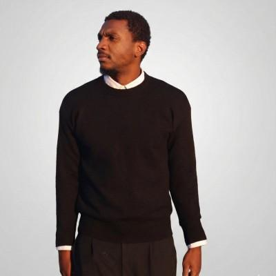

systèmes terrain, hardware, IA appliquée.
field systems, hardware, applied AI.

Je construis LeakLess, un système de monitoring pour réseaux d’eau existants. Premier pilote terrain en préparation sur un bâtiment.
Je développe ENYOLAB, mon lab hardware personnel autour de l’instrumentation, de la robotique et de l’edge AI. En ce moment : bras LeRobot SO-101, téléopération et collecte de démonstrations.
Bac pro MEI (Lycée Paul Belmondo) → BTS ATI, assistance technique d’ingénieur (Lycée Jacquard) → licence supply chain & maintenance industrielle → MIT Professional Education.
Mon parcours s’est construit autour de systèmes physiques réels, en atelier comme sur le terrain : intégration, diagnostic, test, coordination technique et conception d’outils de validation.
Conçu pour remplacer deux postes de test séparés — pneumatique/eau et électrique — par un seul banc. Alimentation 230→24 V, circuit d’eau autonome avec purge et sélection des modes de test. Spécifié avec la méthode APTE, conçu et construit pendant mon BTS. Toujours en service six ans plus tard. case study →
Monitoring de réseaux d’eau existants. Instrumentation, acquisition terrain et validation sur banc hydraulique avant déploiement. Premier pilote en préparation sur un bâtiment.
Bras LeRobot SO-101 leader/follower monté, calibré et téléopéré. Prochaine étape : collecte de démonstrations, entraînement de politiques d’imitation et déploiement sur le système physique.
Expérience sur Diffusion Policy / PushT : est-ce que la régularisation améliore l’efficacité en données lorsque le nombre de démonstrations est limité ?
À 100 démonstrations : 8 % → 19 % puis 8 % → 22 % sur deux seeds. À 200 démonstrations : aucun gain observé. Résultat préliminaire ; la baseline reste inférieure à la référence publiée. résultats →
I am building LeakLess, a monitoring system for existing water networks. First field pilot in preparation on a building.
I am developing ENYOLAB, my personal hardware lab around instrumentation, robotics and edge AI. Currently: LeRobot SO-101 arm, teleoperation and demonstration collection.
Bac pro MEI, industrial equipment maintenance (Lycée Paul Belmondo) → BTS ATI, engineering technician assistant (Lycée Jacquard) → bachelor’s degree in supply chain & industrial maintenance → MIT Professional Education.
My path was built around real physical systems, in the workshop as well as in the field: integration, diagnostics, testing, technical coordination and the design of validation tooling.
Designed to replace two separate test stations — pneumatic/water and electrical — with a single bench. 230→24 V power supply, self-contained water circuit with purge and test mode selection. Specified with the APTE method, designed and built during my BTS. Still in service six years later. case study →
Monitoring of existing water networks. Instrumentation, field acquisition and validation on a hydraulic bench before deployment. First pilot in preparation on a building.
LeRobot SO-101 leader/follower arm assembled, calibrated and teleoperated. Next step: demonstration collection, imitation policy training and deployment on the physical system.
Experiment on Diffusion Policy / PushT: does regularisation improve data efficiency when the number of demonstrations is limited?
At 100 demonstrations: 8 % → 19 % then 8 % → 22 % across two seeds. At 200 demonstrations: no gain observed. Preliminary result; the baseline remains below the published reference. results →